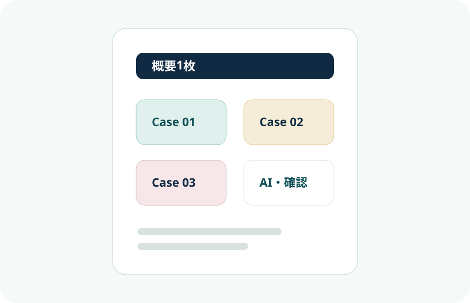

PDF化想定 / 概要1枚

EC・Web運用サポート ポートフォリオ概要
制作物一覧
- Case 01 京こもの日和: 和雑貨EC運営、商品登録、画像補助、SNS、問い合わせ返信
- Case 02 HibiNote Biz: IT営業支援、FAQ、受注管理、Web広報、日次報告
- Case 03 plus closet: ファッションEC販促、LP、バナー、配信文、数値集計
- AI活用レポート: AI補助と本人確認の分担
- 公開前チェックリスト: 共通の確認項目
応募先で活かせる点
- 商品情報、価格、在庫、日付、リンクの正確な確認
- 問い合わせ内容の整理とメール文面作成
- SNS投稿案、バナー、メルマガ、Webお知らせ文の作成補助
- 受注管理、日次報告、期限前相談によるリモート業務の進行
- AIを使った案出しと、自分で行う事実確認の切り分け
一言PR
顧客対応・事務経験を土台に、商品情報や問い合わせ内容を整理し、Web/EC/SNS/広報補助の更新作業を正確に支えます。AIは案出しや確認補助に使い、最終判断と事実確認は自分で行います。